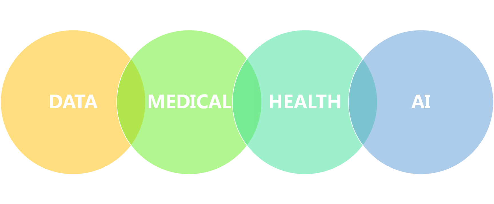

Home
产品介绍
简介
医院数据进行多中心专病连接，做到实时共享和接受关键信息 我们的系统承载和处理日渐庞大的数据量并根据实际需求提供多维度的分析，提高医护人员的看诊效率，以数据的力量，帮助中国医疗机构及临床专家研究和解决科研及临床问题，促进医疗水平的不断提高。为医疗科研研究提供有力的数据支持。
背景
临床科研是临床实践的重要组成部分,是以患者为研究对象的医学科学研究.通过一系列有针对性的临床观察"总结和分析,可了解疾病及各类并发症的发生"发展规律和预后相关因素进而提高诊断水平"治疗效果、 科研与临床的逻辑关系
产品优势
医疗数据科研平台，用于创建和管理网上临床调研和转化医学研究项目等。
——用户使用此平台，按照其流水线作业方式，快速开发科研项目，其中包括两种创建和设计方式：
- 在线联机方式，通过浏览器来启动联机设计器（程序）
- 离线方式，先在Microsoft Excel创建'数据字典' 模板文件，然后再上传至平台。

医疗数据科研平台提供自动数据导出程序，同时内置了可以项目日志、管理员模块、自由报告工具及其它方便试验管理的高级功能，如权限设置、各类文件上传和计算字段等。
- 快速、灵活——从构思到产品级调研/临床试验数据库的建立，仅一天的时间就可以完成；而且无需专业软件工程师。
- 自动数据导出程序——数据导出下载格式，包括EXCEL及各类常见统计软件SPSS、SAS和Stata，R等，便于数据分析、兼容性强。
- 自由报表系统——创建自定义的查询功能，生成报表，以便供查看或下载。备份打印和共享功能。
- 计划管理——使用内置项目日志系统和管理模块来组织试验项目和工作。
- 轻松管理问卷回复者、联系表或创建简单的调研问卷链接——创建邮箱联系表，定制电子邮件邀请，追踪回应者，或创建单项调查链接，并电邮出去或贴在网站上。
- 数据查询——用数据解析工作流模块来记录解决试验数据问题的过程,将以前收集的数据放入问题标签，发布调研邀请电子邮件等个性化服务。
案例介绍
肝内胆管癌 (intrahepatic cholangiocarcinoma，ICC) 是指左右肝管汇合部以上的胆管上皮细胞起源的恶性肿瘤。由于肝内胆管癌的临床表现不明显，一旦发现，多数患者已达晚期，错过了最佳治疗时间，预后差。
目前针对肝内胆管癌的主要治疗方案仍是手术,患者从化疗和放疗、TACE等其它治疗中的获益有限，在精准医学时代，我们希望能够从更多的数据中挖掘和寻找有效的信息，从循证医学的角度为每一位患者提供个体化的治疗。
本数据库的建立，主要是为了收集肝内胆管癌患者的包括基本信息，手术治疗信息，化疗、放疗，随访结果等相关数据，开展国内外多中心协作研究，整合相关诊断治疗资源，为肝内胆管癌患者的精准治疗提供大数据参考。